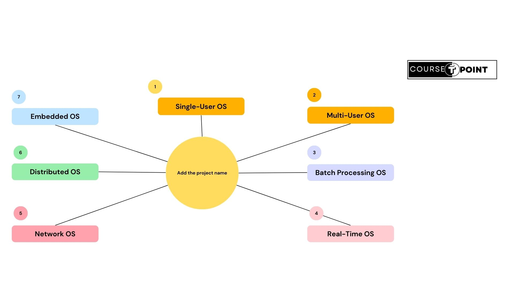

Function Of OS
An operating system (OS) performs various essential functions to manage computer hardware and provide services to software applications:
- Process Management
- Memory Management
- File System Management
- Device Management
- User Interface
- Security Management
Process Management:
Process management is a vital function of an operating system (OS) that involves managing running programs or processes. Here are some key aspects of process management:Memory Management:
Memory management is a crucial function of an operating system (OS) that involves managing computer memory to ensure efficient usage and proper allocation of resources. Here are some key aspects of memory management:- Memory Allocation: The OS allocates memory to processes, determining how much memory each process requires and assigning memory addresses accordingly.
- Memory Deallocation: It deallocates memory that is no longer in use, releasing it back to the system for reuse.
- Memory Protection: The OS protects memory from unauthorized access or modification by enforcing access control mechanisms and memory protection schemes.
- Memory Mapping: It maps virtual memory addresses used by processes to physical memory addresses, allowing processes to access memory efficiently.
- Memory Paging and Swapping: The OS uses paging and swapping techniques to manage memory when physical memory is insufficient, swapping out less frequently used pages to secondary storage such as a hard disk.
- Memory Fragmentation: It deals with memory fragmentation, which occurs when memory becomes fragmented into small, unusable chunks over time. The OS may perform memory compaction or defragmentation to optimize memory usage.
- Allocation: Assigning memory space to processes as needed.
- Deallocation: Reclaiming memory space when it is no longer needed.
- Protection: Ensuring that each process can access only its allocated memory space and preventing unauthorized access.
- Virtual Memory: Managing virtual memory space, which allows processes to use more memory than physically available by utilizing secondary storage (like a hard disk) as an extension of RAM.
- Fragmentation: Addressing memory fragmentation issues to optimize memory usage and prevent wasted space.
- Swapping: Transferring data between main memory and secondary storage when needed to free up space or retrieve data.
Device Management:
Device management is a critical component of operating systems, responsible for managing input/output (I/O) devices and facilitating communication between software and hardware. Key aspects of device management include:- Device Recognition: Identifying and recognizing connected hardware devices upon system startup or when they are plugged in.
- Device Configuration: Configuring device settings and parameters to ensure proper operation and compatibility with the system.
- Device Drivers: Installing and managing device drivers, which are software components that allow the operating system to communicate with hardware devices.
- Device Allocation: Allocating devices to processes or users as needed, allowing multiple processes to share access to the same device without conflicts.
- Device I/O Operations: Managing input and output operations to and from devices, including data transfer, error handling, and device synchronization.
- Device Monitoring and Control: Monitoring device status, performance, and resource usage, and providing mechanisms for controlling device behavior.
User Interface:
User interface (UI) management is an integral part of operating systems, providing users with an interface to interact with the system and applications. Key aspects of UI management include:- Graphical User Interface (GUI): Presenting visual elements such as windows, icons, menus, and buttons for user interaction, making it easier for users to navigate and operate the system.
- Command-Line Interface (CLI): Providing a text-based interface where users can enter commands to perform tasks, suitable for advanced users and system administrators.
- Window Management: Managing the creation, positioning, resizing, and closing of windows in a GUI environment, allowing users to multitask and organize their workspace.
- Event Handling: Responding to user input events such as mouse clicks, keyboard inputs, and touch gestures, and triggering appropriate actions or responses.
- Accessibility Features: Providing features such as screen readers, magnifiers, and keyboard shortcuts to accommodate users with disabilities and improve accessibility.
- Customization Options: Allowing users to customize the appearance and behavior of the user interface according to their preferences, such as changing themes, fonts, and shortcut keys.
- Resource Protection: Operating systems must protect system resources such as files, directories, memory, and devices from unauthorized access.
- Patch Management: Operating systems need to be regularly updated with security patches to fix vulnerabilities and weaknesses that could be exploited by attackers.
- User Education and Awareness: Security management in an operating system also involves educating users about security best practices, such as creating strong passwords, avoiding phishing attacks, and recognizing signs of malware or other security threats.
- Backup and Disaster Recovery: Implementing robust backup and disaster recovery procedures ensures that critical data and system configurations can be restored in the event of a security incident, hardware failure, or natural disaster.
Components Of OS:
The main components of an operating system typically include:
Kernel:The core component of the operating system that manages system resources such as CPU, memory, and I/O devices. It provides essential services to other parts of the operating system and user programs.
Device Drivers: Software components that enable the operating system to communicate with hardware devices such as printers, keyboards, mice, and network adapters.
System Libraries:Collections of reusable code and functions that provide common functionality to applications and system utilities. These libraries simplify development and improve efficiency by providing pre-written code for tasks such as input/output operations, string manipulation, and mathematical calculations.
File System: Organizes and manages files on storage devices such as hard drives, solid-state drives (SSDs), and optical disks. It provides methods for creating, accessing, and manipulating files and directories.
Networking:Facilitates communication between computers and network devices. It includes protocols, services, and configurations for connecting to local and wide-area networks, such as Ethernet, Wi-Fi, and the Internet.
Types Of OS:
Operating systems can be categorized into various types based on their characteristics and functionalities. Here are some common types of operating systems:
Single User Operating System
A single user operating system is designed to be used by only one user at a time. It manages resources such as memory, CPU, and peripherals for the user's applications.In other words, it allows only one user to interact with the system and its resources concurrently.
Advantages of Single User Operating System-
Simplicity: Single-user operating systems are typically designed with simplicity in mind. They have straightforward interfaces and functionalities tailored for individual users, making them easy to use and navigate, especially for those who are not tech-savvy.
Resource Allocation: Since single-user operating systems cater to the needs of only one user at a time, they can efficiently allocate system resources such as CPU time, memory, and storage to meet the demands of that user's tasks and applications. This ensures optimal performance and responsiveness for the user.
Cost-effectiveness: Single-user operating systems are often more cost-effective for individual users compared to multi-user systems, as they do not require additional licensing or infrastructure for supporting multiple users. This makes them an attractive option for personal computing needs.
Disadvantages of Single User Operating System-
Limited Sharing: Single-user operating systems are not designed for concurrent usage by multiple users. This means they lack features for sharing resources, files, and applications among multiple users, which can be a limitation in collaborative or multi-user environments.
Limited Scalability: Single-user operating systems may struggle to handle high workloads or resource-intensive tasks, as they are optimized for supporting a single user's computing needs. Scaling up the system to accommodate multiple users may require transitioning to a multi-user operating system, which can be complex and costly.
Limited Security: Single-user operating systems may have weaker security measures compared to multi-user systems, as they focus primarily on protecting the individual user's data and privacy rather than managing access for multiple users. This can make single-user systems more vulnerable to security threats such as malware, phishing attacks, and unauthorized access.
Multi-User Operating System
A multi-user operating system allows multiple users to access the computer system simultaneously. It provides resource management and security features to ensure fair and secure access to resources. Unlike single-user operating systems, which cater to the needs of only one user at a time, multi-user operating systems support concurrent access by multiple users.
Advantages of Multi-User Operating System
Resource Sharing: Multi-user operating systems allow multiple users to share system resources such as CPU time, memory, storage devices, and peripherals. This efficient utilization of resources minimizes waste and maximizes the overall productivity of the system.
Cost Efficiency: By sharing resources among multiple users, organizations can reduce hardware and software costs compared to deploying separate systems for each user. This makes multi-user operating systems cost-effective, especially in enterprise environments where economies of scale are important.
Security: Multi-user operating systems provide robust security features to protect sensitive data and resources from unauthorized access, data breaches, and malicious activities. User authentication, access control, encryption, and auditing mechanisms help enforce security policies and ensure compliance with regulatory requirements.
Disadvantages Of Multi-User Operating System
Complexity: Multi-user operating systems are inherently more complex than single-user systems. They require sophisticated mechanisms for managing resources, handling user interactions, and ensuring data security. This complexity can make the system harder to design, implement, and maintain.
Compatibility issues: Software applications designed for single-user systems may not always work seamlessly in a multi-user environment. Developers need to consider concurrency, resource sharing, and security concerns when designing applications for multi-user operating systems. Additionally, legacy applications may require modifications to function correctly in a multi-user environment.
Administration overhead: Managing a multi-user operating system requires additional administrative overhead compared to a single-user system. Administrators must monitor system usage, allocate resources fairly among users, troubleshoot issues, and enforce security policies. This can be time-consuming and may require specialized skills.
Batch Processing Operating System
A batch processing operating system processes tasks in batches, without user interaction. Jobs are submitted to the system in advance, and these jobs are collected, organized, and executed by the operating system without user interaction, typically without requiring immediate user intervention for each step. Batch processing systems were prevalent in the early days of computing and are still used in various applications today.
Advantages Of Batch Operating System
Efficient Resource Utilization: Batch processing systems allow for the efficient utilization of computing resources by executing multiple tasks sequentially without the need for constant user interaction. This maximizes the use of available CPU time, memory, and other system resources.
Automation: Batch processing systems automate repetitive tasks, reducing the need for manual intervention and minimizing human error. Users can submit jobs and rely on the system to execute them according to predefined rules and schedules.
Increased Throughput: Batch processing systems can handle large volumes of data and process numerous tasks efficiently. By executing jobs in batches, the system can achieve higher throughput compared to processing tasks individually.
Disadvantages Of Batch Operating System
Limited Interactivity: Batch processing systems are less interactive compared to real-time or interactive systems. Users typically submit jobs and must wait for the system to process them before receiving results. This lack of interactivity can be problematic for tasks that require immediate feedback or user intervention.
Processing Delays: Jobs in a batch processing system are executed sequentially, which can lead to processing delays, especially when the system is handling a large volume of tasks. Users may experience longer wait times for their jobs to be completed, particularly if there are resource constraints or high system utilization.
Risk of Data Staleness: In batch processing systems, data may become stale or outdated between the time it is submitted for processing and the time results are generated. This can be problematic for applications that require up-to-date information for decision-making or analysis.
Real-Time Operating System (RTOS)
A real-time operating system is designed to handle tasks with strict timing requirements. It guarantees that tasks are executed within specific time constraints, making it suitable for time-critical applications such as embedded systems, industrial automation, and control systems.
Advantages Of Real-Time Operating System
Predictability: Real-time operating systems are designed to provide deterministic behavior, ensuring that tasks are executed within specified time constraints. This predictability is crucial for applications where timely responses are essential, such as industrial automation, control systems, and critical infrastructure.
Reliability: Real-time operating systems are built with a focus on reliability and fault tolerance. They often include features such as error detection, recovery mechanisms, and fault isolation to ensure continuous operation even in the presence of hardware failures or software errors.
Deterministic Task Scheduling: RTOSs employ specialized scheduling algorithms, such as fixed-priority scheduling or rate monotonic scheduling, to guarantee that critical tasks meet their deadlines. This deterministic task scheduling ensures that high-priority tasks are executed in a timely manner, even under varying system loads.
Disadvantages Of Real-Time Operating System
Complexity: Real-time systems can be more complex to design, implement, and maintain compared to non-real-time systems. Ensuring deterministic behavior, meeting stringent timing requirements, and managing real-time tasks effectively often requires specialized knowledge and expertise.
High Cost: Developing and deploying real-time systems can be costly, particularly in safety-critical applications such as aerospace or medical devices where rigorous testing and certification processes are necessary. The specialized hardware and software required to support real-time requirements may also incur additional expenses.
Risk of Failure: Despite their emphasis on reliability and fault tolerance, real-time systems are not immune to failures. Hardware malfunctions, software bugs, or unexpected environmental conditions can still lead to system failures or performance degradation, which may have serious consequences in safety-critical applications.
Network Operating System (NOS)
A network operating system provides the infrastructure and services necessary for computers to communicate and share resources over a network. It includes features such as file sharing, print services, security, and user authentication.
Advantages Of Network Operating System
Centralized Management: A network operating system provides centralized management capabilities, allowing administrators to manage user accounts, permissions, and network resources from a central location. This simplifies administration tasks and ensures consistency across the network.
Resource Sharing: One of the primary advantages of a network operating system is the ability to share resources such as files, printers, and applications among multiple users and computers on the network. This allows for more efficient utilization of hardware resources and reduces the need for redundant equipment.
Scalability: Network operating systems are designed to scale with the growing needs of an organization. They can support additional users, devices, and network resources without significant performance degradation or disruption.
Disadvantages Of Network Operating System
Complexity: Network operating systems can be complex to configure, manage, and troubleshoot, especially in large-scale network environments. They often require specialized knowledge and expertise to set up and maintain effectively.
Single Point of Failure: A network operating system represents a single point of failure for the entire network. If the NOS experiences a hardware failure, software crash, or other issue, it can disrupt access to network resources and services for all users.
Training and Support Needs: Deploying and managing a network operating system effectively requires ongoing training and support for administrators and end-users. Keeping staff up-to-date with the latest technologies, security best practices, and troubleshooting techniques is essential for maintaining network reliability and security.
Distributed Operating System
A distributed operating system manages a group of independent computers and makes them appear as a single computer system. It provides features such as process management, file systems, and communication mechanisms to facilitate distributed computing.
Advantages Of Distributed Operating System
High Availability: Distributed operating systems can improve system availability by replicating resources and services across multiple nodes in the network. If one node fails or becomes unavailable, other nodes can continue to provide access to resources, ensuring continuous operation and minimal downtime.
Improved Performance: By distributing processing tasks and data across multiple nodes, distributed operating systems can improve overall system performance. Parallel processing, load balancing, and distributed caching techniques help optimize resource utilization and reduce latency, leading to faster response times for users.
Flexibility and Adaptability: Distributed operating systems offer greater flexibility and adaptability compared to centralized systems. They can support diverse hardware platforms, network configurations, and application requirements, making them well-suited for dynamic and heterogeneous environments.
Disadvantages Of Distributed Operating System
Increased Overhead: Distributed operating systems impose additional overhead on system resources such as CPU, memory, and network bandwidth due to communication, synchronization, and coordination between distributed components. This overhead can impact system performance and scalability, particularly in large-scale deployments.
Consistency and Data Integrity: Maintaining consistency and data integrity in distributed operating systems can be challenging, especially in the presence of concurrent access and updates to shared resources. Ensuring that distributed nodes have consistent views of data and resolving conflicts and inconsistencies require complex synchronization and replication mechanisms.
Cost and Resource Allocation: Building and maintaining distributed operating systems can be costly, particularly in terms of hardware, software, and infrastructure requirements. Allocating resources, managing costs, and optimizing resource utilization across distributed nodes require careful planning and management to avoid inefficiencies and overspending.
Embedded Operating System
An embedded operating system is designed to run on embedded devices with limited resources, such as microcontrollers, IoT devices, and consumer electronics. It is optimized for low power consumption, small footprint, and real-time performance.
Advantages Of Embedded Operating System
Resource Efficiency: Embedded operating systems are designed to operate with minimal resources such as CPU power, memory, and storage. They are often tailored to the specific hardware they run on, optimizing resource usage and maximizing performance.
Real-time Processing: Many embedded operating systems are capable of real-time processing, where tasks are executed within strict timing constraints. This is crucial for applications where timing accuracy is essential, such as in industrial automation, automotive systems, and medical devices.
Customizability: Embedded operating systems can be highly customizable to meet the specific requirements of the embedded system they are running on. Developers can strip down unnecessary features, add custom drivers, and optimize the system for the target application, resulting in a lean and efficient system.
Reliability: Embedded operating systems are often built with a focus on reliability and stability. They are engineered to run for long periods without interruption, making them suitable for mission-critical applications where system failures are not acceptable.
Disadvantages Of Embedded Operating System
Limited Functionality: Embedded operating systems are often tailored for specific applications and may lack the extensive functionality found in general-purpose operating systems like Windows or Linux. This can be a limitation if the embedded device requires a wide range of features or compatibility with third-party software.
Development Challenges: Developing software for embedded operating systems can be more challenging compared to general-purpose operating systems. Developers may need specialized skills, tools, and knowledge of the target hardware platform, which can increase development time and cost.
Hardware Limitations: Embedded operating systems are often designed to run on resource-constrained hardware, which may impose limitations on performance, memory, and storage capacity. This can restrict the capabilities of embedded devices and constrain the complexity of software applications that can be run on them.